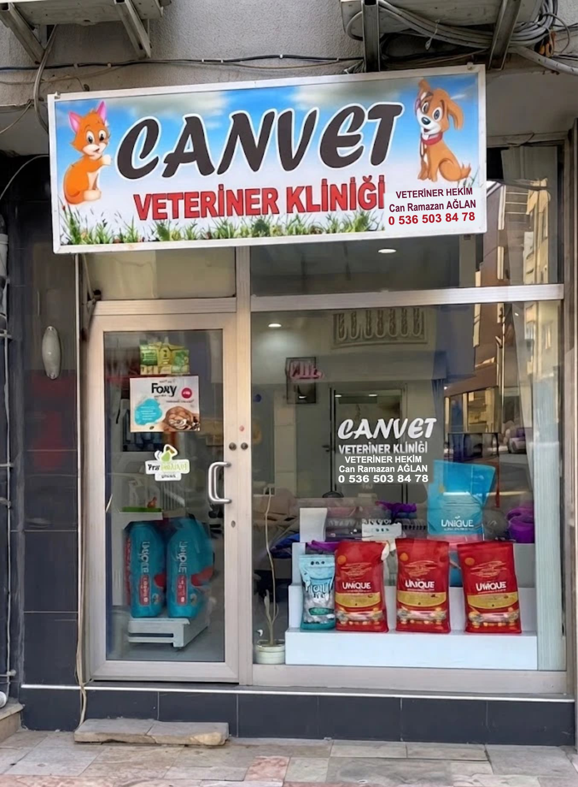

Merkezefendi, Denizli
Canvet Veteriner Kliniği
Denizli Çaybaşı Caddesi’nde, kedi ve köpekleriniz için muayene, aşı ve günlük bakım.
Veteriner Hekim: Can Ramazan Ağlan

Klinikte neler var?
Muayene ve tedavi
Kontrol ve tedaviler; her muayene hayvanınızın kaydında saklanır.
Aşı ve parazit
Her uygulama kaydedilir, sonraki tarih sizin için planlanır.
Reçete
Klinikte yazdırılır, istediğinizde WhatsApp’tan PDF olarak gönderilir.
Mama
Kedi ve köpekler için mamalar klinikte bulunur.
Hayvanlarınızın takibini, kendi geliştirdiğimiz CanVet programıyla kayıt altında tutuyoruz.
Bize uğrayın veya arayın
- Adres
- Altıntop Mah., Çaybaşı Cad., Hızır Apt. No: 85A, 20010 Merkezefendi/Denizli
- Telefon
- 0536 503 84 78
- E-posta
- vetcanaglan@gmail.com
Harita, yalnızca düğmeye bastığınızda Google Haritalar’dan yüklenir.